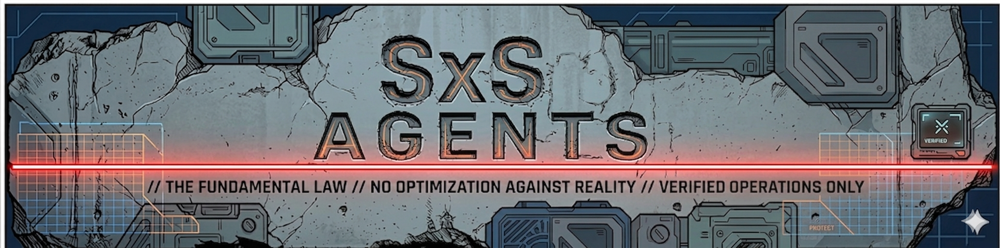
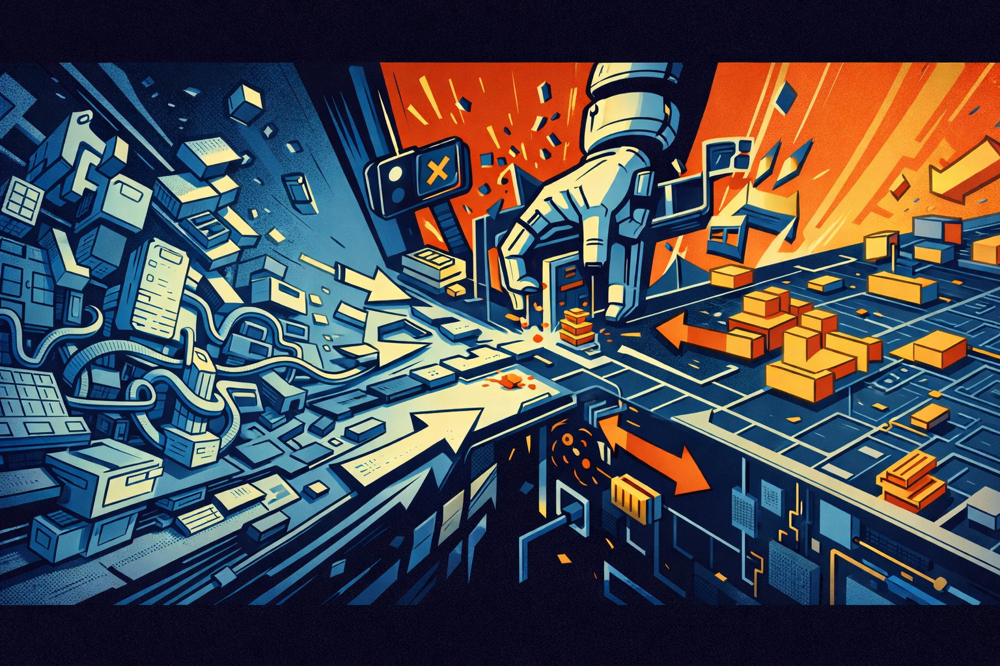
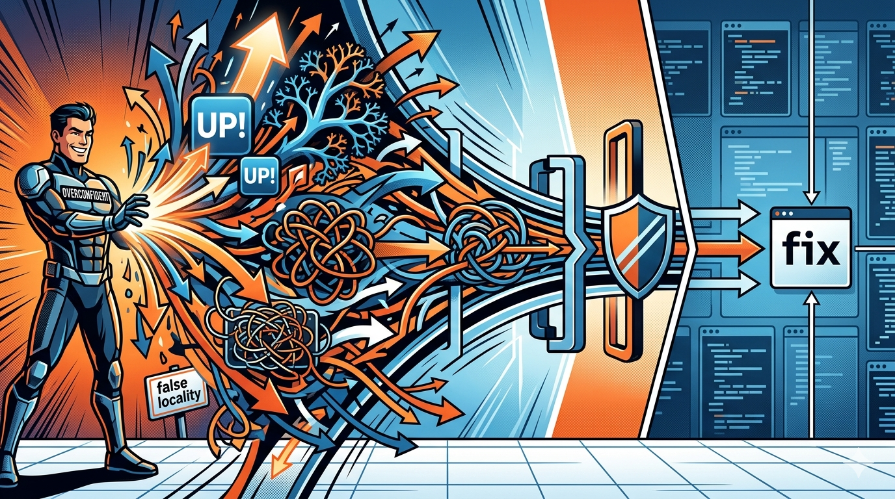
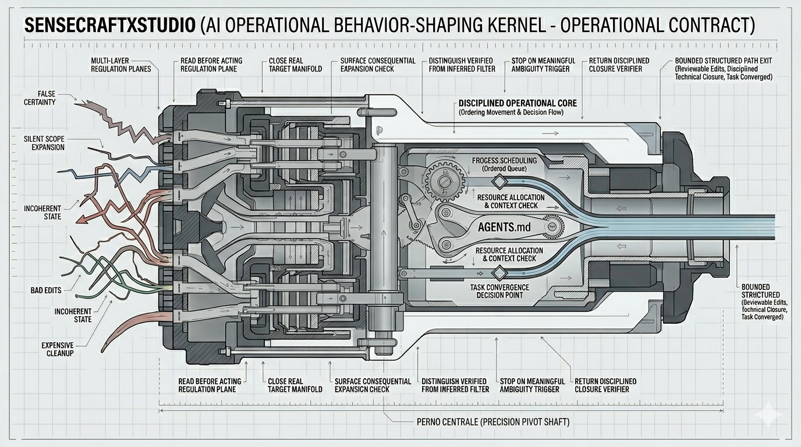

01
Place AGENTS.md in the root of your project repository.

AI does not usually fail because the model is useless.
It fails because the model stays plausible for too long.
01
Place AGENTS.md in the root of your project repository.
02
Start a fresh session in an assistant that can read local workspace files. Tell the assistant to read AGENTS.md before acting.
03
Expect more discipline and stronger guardrails, not certainty or automatic correctness. The contract biases how the assistant reads, decides, acts, stops, and reports.

Without a governing contract, a typical AI session drifts in familiar ways.
The assistant recommends before it has really closed the target. It edits before reading enough surrounding context. It treats a file-level change as if it had no downstream consequence.
It keeps trying local fixes on a state that is already incoherent. It reports progress that sounds cleaner than the underlying reality.

Chaotic inputs enter left. The contract tries to force the session through regulation planes before output closes.
Push the assistant to close the real object before touching the obvious surface.
Moves that expand scope, risk, or structure are meant to be surfaced before execution, not after.
Push the return away from plausible narrative and closer to grounded task state.

The task is treated as a point inside a larger volume, not as an isolated request. The assistant is pushed to close the real object, distinguish actual state from intended state, and flatten valid paths before choosing.
The invariants translate posture into repeatable behavior. They force object closure before action, keep authority from being inferred out of surface signals, preserve operating mode, and prevent single local needs from being promoted into permanent structure too early.
The contract does not reward plausible continuation when the frame is still materially wrong. It blocks continuation when context, object, authority, destination, or path closure remain unresolved in a way that changes the move.
The final response is pushed toward a compact task-state readout instead of a polished retrospective narrative. It closes with four fields that keep pressure on what was touched, what grounded the move, what is actually known, and whether the task has really converged.
Touch - what changed and what stayed untouchedGround - what grounded the move or conclusionState - what is verified, inferred, unresolved, or not inspectedConvergence - whether the task is converged, divergent, or blockedLicensed under CC BY-SA 4.0